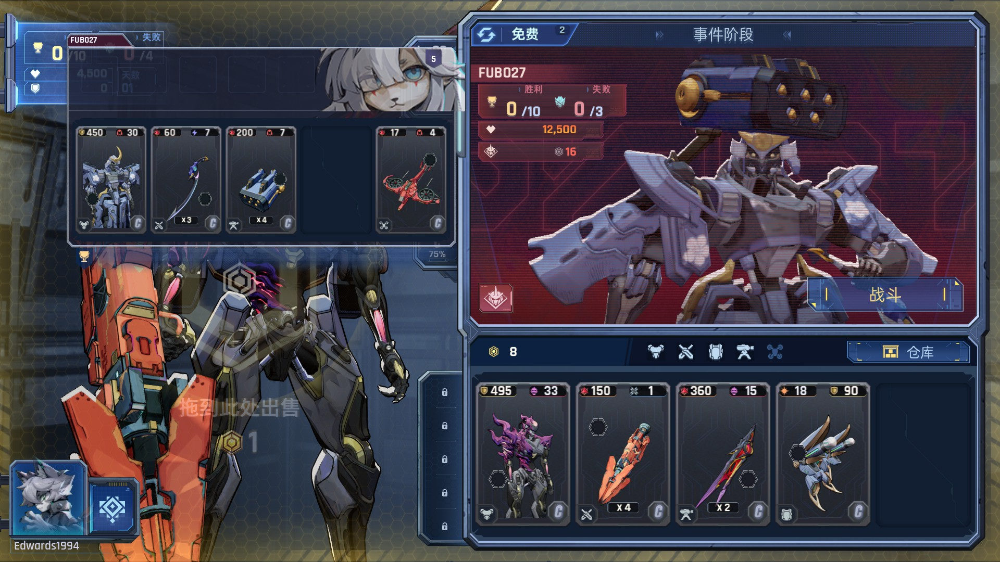
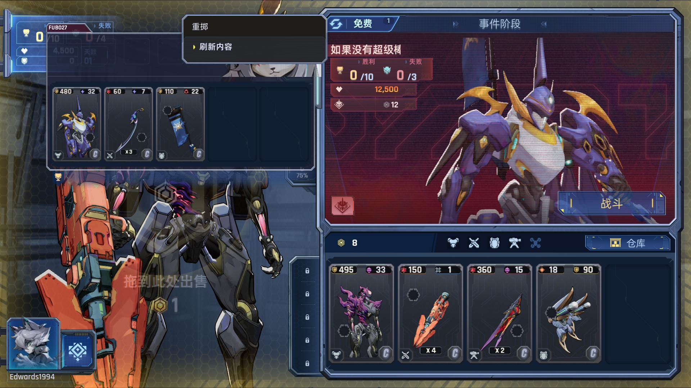
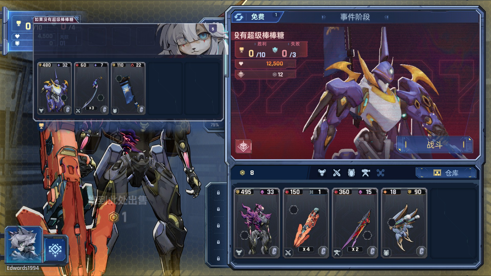
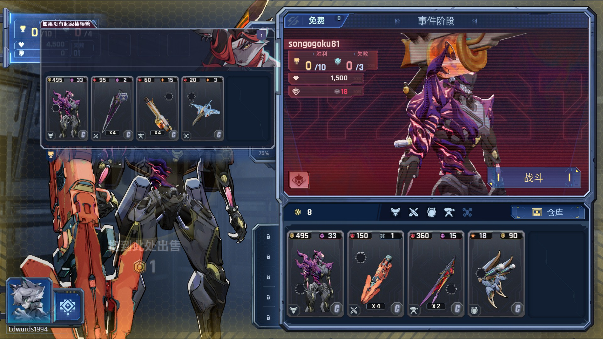
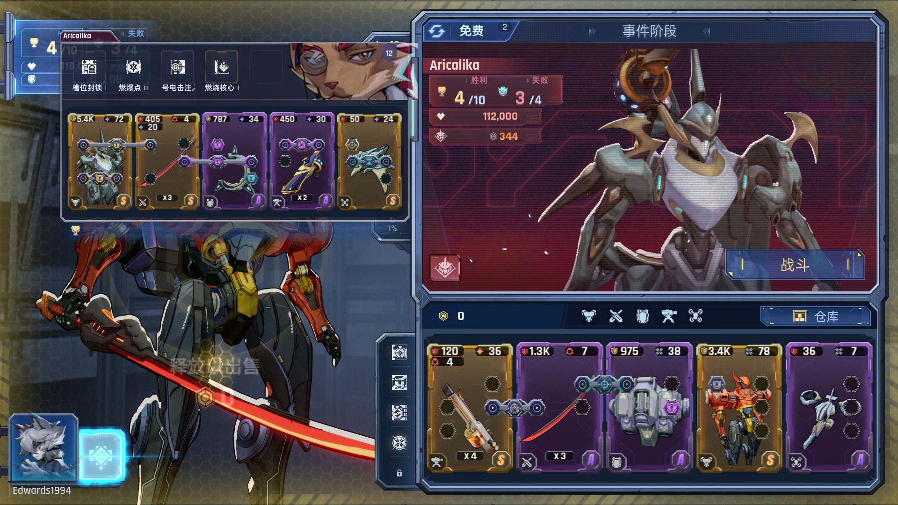
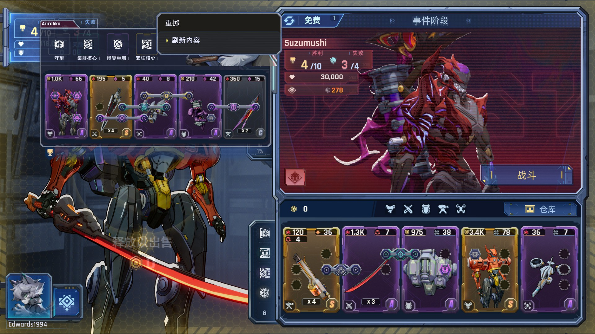
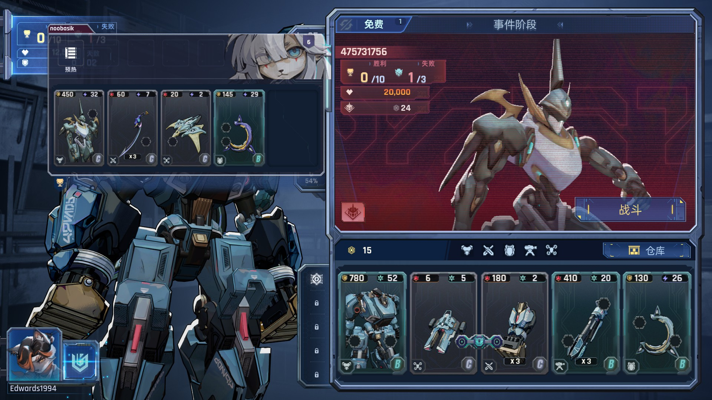
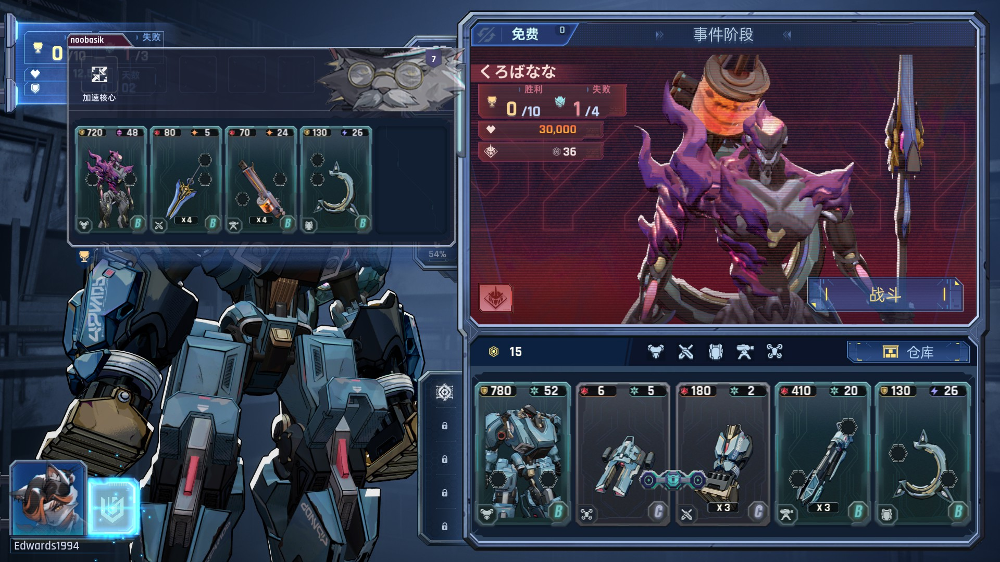
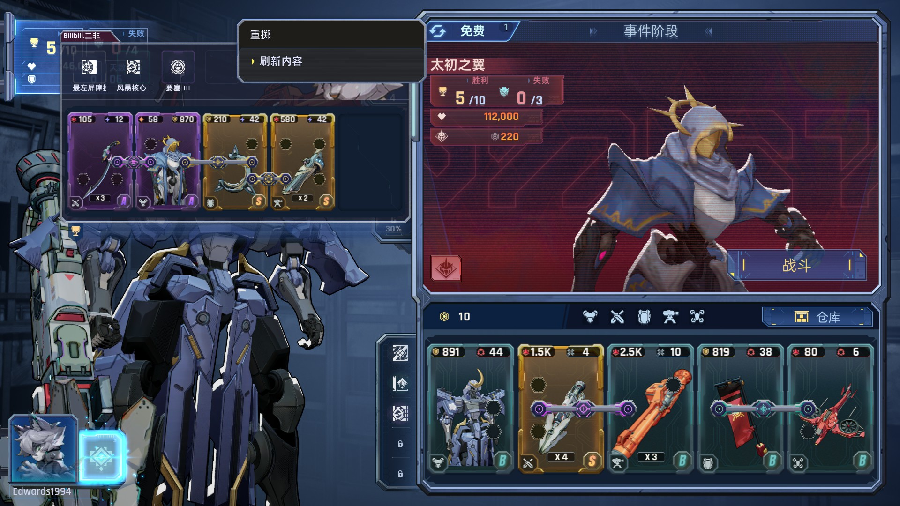

重掷后，对手详情保留旧名字
BUG-001 · 已复现 2026-11-15，Windows Steam Demo 1.0.0.2218，Build 26644085。挑战赛第 1 天日末选敌，同一局的两次免费重掷均出现（2/2）。
怎样看到这个问题
- 在日末选敌页点击眼睛图标，展开左侧对手详情。对照左侧标题和右侧对手卡的名字。
- 保持详情展开，点「免费」重掷。等右侧机甲和左侧装备卡刷新，再读两个名字。
- 收起并重新展开详情。确认名字恢复一致后，保持展开，再次重掷。
预期 详情显示当前所选对手的名字和装备，两者可以用右侧对手卡核对。
实测 两次更换后，详情里的装备都更新了，标题各自落后一个对手。第一次收起再展开后标题恢复。第二次随后正常进入战斗。影响是玩家可能把眼前的装备记到前一位对手名下。
截图证据
对照左上角详情标题和右侧红色对手卡的名字。点击图片可按原始分辨率查看。












第二局再次出现 · 第11天
2026-11-15 23:40—23:41，同一版本。初始对手kamisama，保持详情展开连续重掷两次，右侧依次变为bakerfels、即季剧，左侧始终保留kamisama。此轮没有在两次重掷之间重新展开详情，因此准确描述是「保留最后一次打开详情时的名字」，并非每次都只落后一个对手。本轮两次重掷均可见（2/2）；未新增验证恢复步骤。


第三局第2天再次观察
2026-11-16，右侧两次变为475731756、くろはなな，左侧仍是noobasik。


run05补充
2026-11-16第6天保持详情打开重随，左侧仍Bilibili.二非，右侧已太初之翼，装备与科技已变化。本补充采用1次清晰复现；没有把未逐一核对的其他重随计入复现率。Steam Build26694005，菜单版本待核。
